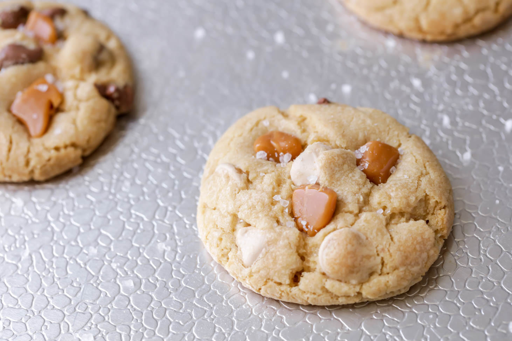

Doces · Biscoitos
Biscoitinhos de caramelo

Ingredientes
- 1/2 xícara de manteiga
- 2/3 xícara de açúcar mascavo
- 1 ovo
- 1 1/3 xícara de farinha de trigo
- 1/2 colher (chá) de fermento em pó
- 1/2 colher (chá) de baunilha
- 1/3 xícara de nozes picadas
Modo de preparo
- Derreta manteiga; junte mascavo e misture. Bata ovo até esbranquiçar (~10 min).
- Peneire farinha com fermento; incorpore baunilha e nozes.
- Refrigere ~40 min. Pré-aqueça a 180 °C.
- Forme bolinhas; asse. Esfrie e congele.
Observação
Em latas fechadas duram 2 meses; congelados 3–6 meses. Descongele 1 h.